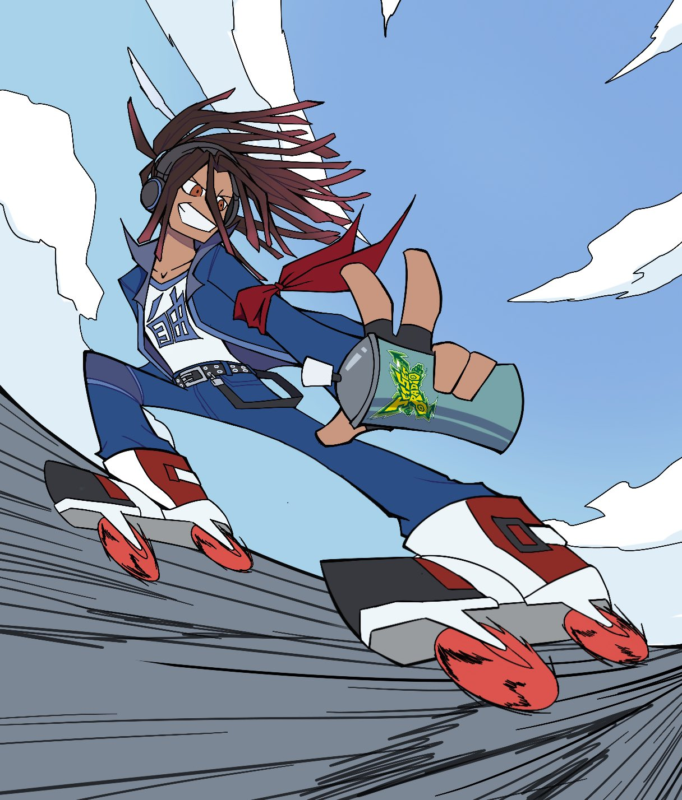
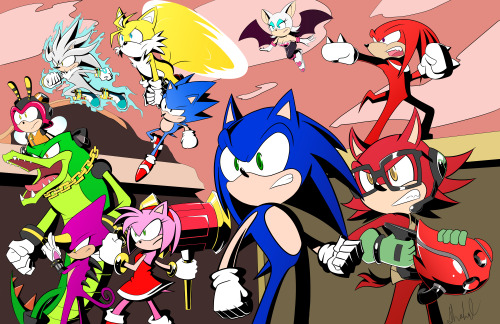
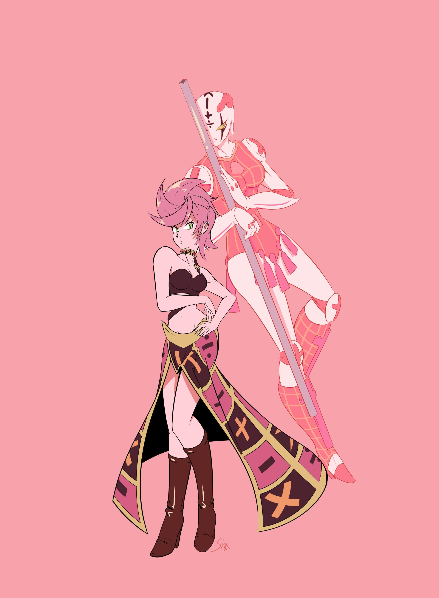
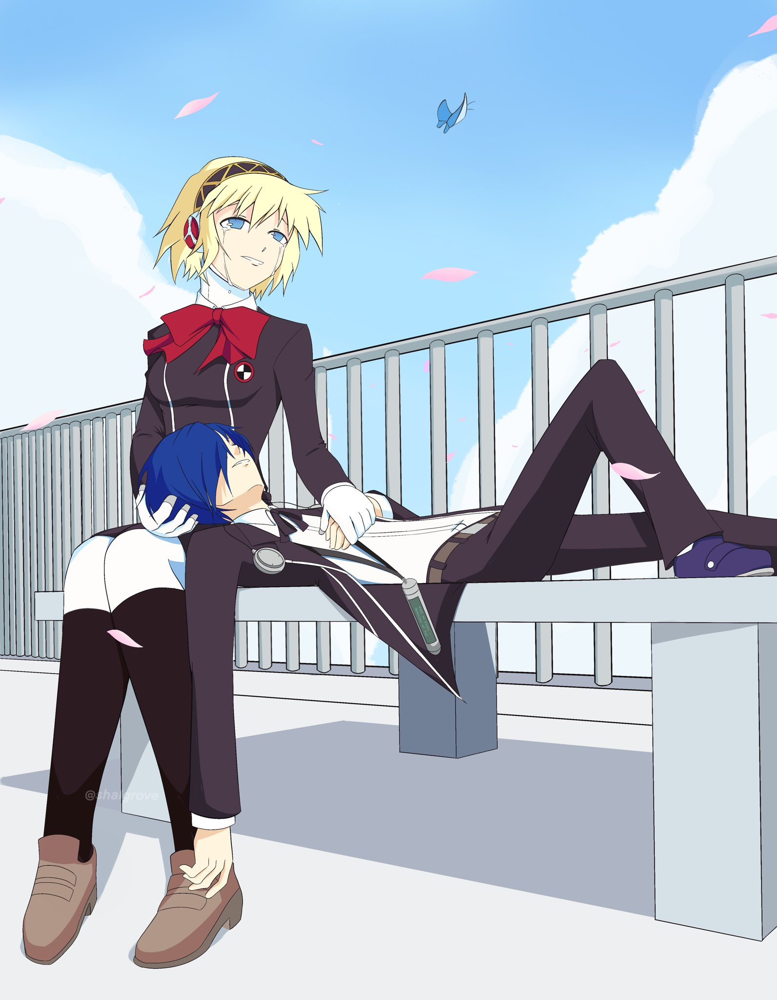

My very first animation. Its a simple one of Kirby from Nintendo's video game series of the same name.
You can consider this a sort of self portrait. The hashtag #JetSetSona was trending on Twitter with artist drawing interpretations of themselves in the style of the SEGA video game, Jet Set Radio
Fan art for the game Sonic Forces. This art ended up getting featured in the official Sonic the Hedgehog comics by IDW
Art of the character Trish and her Stand, Spice Girl, from JoJo's Bizarre Adventure: Golden Wind
Art I did for March 5th, which depicts what happens that day in the game Persona 3